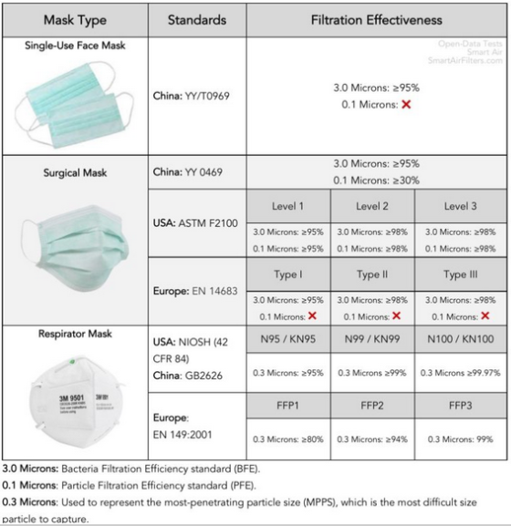

Protection and functionality
Our research seems to indicate that masks are a measure one takes to protect others rather than to protect
themselves. They are effective in slowing virus spread only when paired with frequent hand washing. Wearing
a mask does not necessarily guarantee protection against infection.
The proper way to put on a mouth mask
- Washing hands with soap and water for 20s
- Putting mask over nose and mouth, gently stretching it over the chin
- If applicable: pressing the metal wire at the bridge of the nose gently in order to improve fit
- Washing hands with soap and water for 20s after removing the mask
Types of masks
There are different types of masks on the market. Ones that are used in the hospitals and for medical use
and some that can be used for living. It is very important that the mask has a good filtration system and it
hold small microns out (or in).
The following is an overview of the filtration effectiveness of different frequently used masks with the
standards of different continents:

Materials
The use of cotton in an outer layer of a mouth mask can be very beneficial. The material can be washed at a
very high temperature to kill bacteria. Cotton can also hold 24-27 times their own weight. For a mouth mask
this is a huge advantage with the moisture that comes out of your mouth while breathing.
Quilting
Quilting is a technique which can be used with cotton fabric and is also a good solution. Quilters have a
high quality and a high thread count cotton. It shows that these filters are just as good or better than the
surgical mask in the hospital with a percentage of 70 to 79 filtration. The disadvantage of quilting is that
it is not easy to do for an unexperienced sewer.
Filter
The standards of the vacuum cleaner bags are estimated to remove 99,97 percent of the particles that are 0.3
microns in size from the air that passes through them. Particles smaller than 0.3 microns can escape from
the filter. This is the best filter with the most hold of the particles that can be made from household
materials. What people need to be attentive to that they use the vacuum cleaner bags without glass fibers.
These can be harmful for your health.
Washing
The washing of the homemade mask is a complex piece. To get more knowledge of this we asked the Robert Koch
Institute for help. The information we got from them is to wash the masks in the machine at 95 degrees for
30 minutes then the virus will be killed. With washing it is very important to be careful what the mask is
touching, when it gets in touch with different objects this can be infected.
Recommendations
Non-woven fabrics have the best properties for a mouth mask, the disadvantage to this is that non-woven
fabrics are not a regular fabric that people have at home. After the research, the recommended material to
use for a mouth mask is a hydrophilic material as outer material and a hydrophobic material as a filter. For
our research it is important that people can easily make a mask themselves with household materials.
Our
recommendation for the outer material is to use a cellulose fiber material like cotton and for filter
material a vacuum cleaner bag. This will give a good filtration if the mask fits correctly to the face.
Therefore, different sizes of patterns are available in our research.